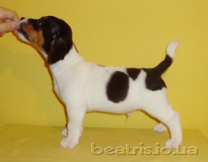

Мальчик 1 - ZHERAR HEAVENLY BLESSING, возраст на фото 2,5 месяца. НАШЕЛ СВОИХ ХОЗЯЕВ.
Мальчик 1 - ZHERAR HEAVENLY BLESSING, возраст на фото 1,5 месяца. НАШЕЛ СВОИХ ХОЗЯЕВ.
Мальчик 2 - ZHAK HEAVENLY BLESSING, возраст на фото 1,5 месяца. НАШЕЛ СВОИХ ХОЗЯЕВ.

Мальчик 2 - ZHAK HEAVENLY BLESSING, возраст на фото 1,5 месяца. НАШЕЛ СВОИХ ХОЗЯЕВ.
Девочка 1 - ZHASMIN HEAVENLY BLESSING, возраст на фото 2,5 месяца. ОСТАЕТСЯ В ПИТОМНИКЕ.
Девочка 1 - ZHASMIN HEAVENLY BLESSING, возраст на фото 1,5 месяца. ОСТАЕТСЯ В ПИТОМНИКЕ.
Девочка 2 - ZHENEVJEVA HEAVENLY BLESSING, возраст на фото 1,5 месяца. НАШЛА СВОИХ ХОЗЯЕВ.
Девочка 2 - ZHENEVJEVA HEAVENLY BLESSING, возраст на фото 1,5 месяца. НАШЛА СВОИХ ХОЗЯЕВ.

Девочка 3 - ZHOZEFINA HEAVENLY BLESSING, возраст на фото 2,5 месяца. НАШЛА СВОИХ ХОЗЯЕВ.
Девочка 3 - ZHOZEFINA HEAVENLY BLESSING, возраст на фото 1,5 месяца. НАШЛА СВОИХ ХОЗЯЕВ.
ЩЕНКИ ДЖЕК РАССЕЛ ТЕРЬЕРА
Помет "Zh" ("Ж")
17 сентября 2013г. родились щенки джек рассел терьера от великолепных представителей породы, Интерчемпионов HUOLETON CAPRICORNUS и YANITA TOTTENHAM COURT - 2 мальчика триколор и 3 бело-рыжие девочки!
Все щенки помета нашли своих хозяев!
РОДИТЕЛИ ЩЕНКОВ

| HUOLETON CAPRICORNUS | YANITA TOTTENHAM COURT |
|
Юный Чемпион России | Юный Чемпион Латвии Интерчемпион |
Юный Чемпион Украины Интерчемпион Чемпион Украины Чемпион Молдовы Призер группы - 3 место Лучший представитель породы Лучшая сука породы Лучшая сука юниор на II Чемпионате ДРТ 2012 (Украина) |
|
ДАТА РОЖДЕНИЯ: 07.11.10
ИМПОРТ: Финляндия
ТИП ШЕРСТИ: Брокен
РОСТ: 26,5 см
ТЕСТЫ: Eye`s ok, patella`s ok
|
ДАТА РОЖДЕНИЯ: 09.02.11
ТИП ШЕРСТИ: Гладкошерстный
РОСТ: 29 см
|
|
Дедушка щенков Мультичемпион GOLDSAND'S COLUMBUS - самый титулованный джек рассел терьер, который на сегодняшний день занимает 10 строчку в мировом рейтинге среди собак всех пород группы терьеров. Титулы, полученные им на выставках Американского Кеннел Клуба: 4xBIS-1, 28xBIG-1, 13xBIG-2, 6xBIG-3, 8xBIG-4, 63xBOB!!! В 2013 году на знаменитой выставке-шоу чемпионов Westminster KC 2013 GOLDSAND'S COLUMBUS стал Лучшим представителем породы и занял 4-е место в Best In Group! |
 |
РОДОСЛОВНАЯ ЩЕНКОВ/PEDIGREE PUPPIES


Лабрадор ретривер, Джек Рассел Терьер, купить щенка джек рассел терьер украина киев, объявления о продаже щенков джек рассел терьера в украине киев, щенки лабрадор ретривера киев, щенки лабрадора ретривера, стандарт породы лабрадор ретривер, стандарт породы джек рассел терьер, фото лабрадор ретривера, фото щенок лабрадора, щенки джек рассел терьера в Киеве, питомники лабрадоров в киеве, питомники джек рассел теьреров в киеве, щенки триколор купить киев украина, черные щенки лабрадора купить киев украина, щенки лабрадора украина, щенки джек рассел терьера в Украине, купить щенка лабрадор ретривера, питомники лабрадоров, джек рассел триколор фото, джек рассел терьер купить цена, джек рассел терьер киев, щенки джек рассела, питомник лабрадор ретриверов, купить щенка джек рассел терьера в Украине, продам джек рассел терьер щенки, продам щенка джек рассел терьера украина киев, питомники джек рассел терьеров, собака, джек, лабрадор, щенки, киев купить джек рассел терьер, киев купить лабрадор ретривер, джек рассел терьер цена, джек рассел терьер купить киев, джек рассел терьер в Украине, джек рассел терьер киев доставка, вязка лабрадор ретривер, питомник Джек рассел терьера, заводчик, вязка, цена, Маска, джек рассел, щенки с доставкой, документы, элитные щенки Джек рассел терьера, лучшие Джек расселы, Джек рассел и знаменитости, фото Джек рассел терьера, форум Джек рассел терьера, Чемпионы Джек рассел терьера, разный окрас - би и триколор, производители Джек рассел терьера, купить лучшего щенка, фото Джек рассел терьера, фотогалерея Джек рассел терьера, как кормить Джек рассел терьера, уход и воспитание Джек рассел терьера, уход за щенком, чем кормить щенка, чем кормить собаку, ветеринарные советы владельцам собак, ветеринарные советы владельцу щенка
Обновлен 27 янв 2014.
Создан 31 июл 2013